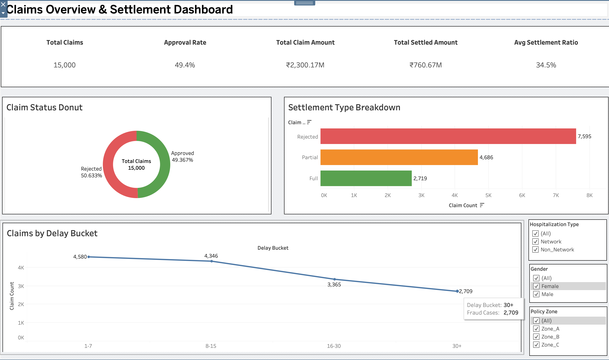
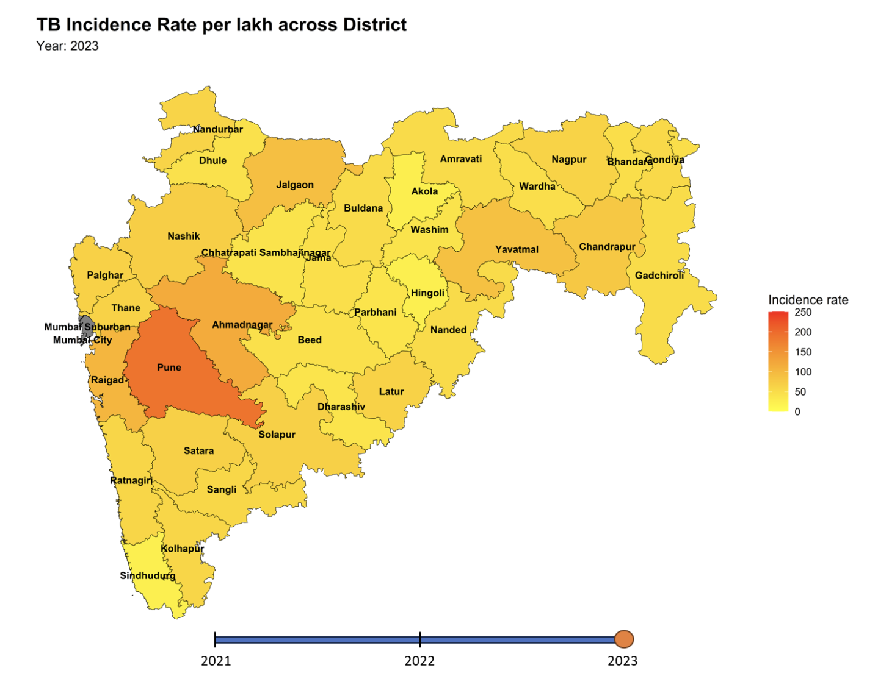
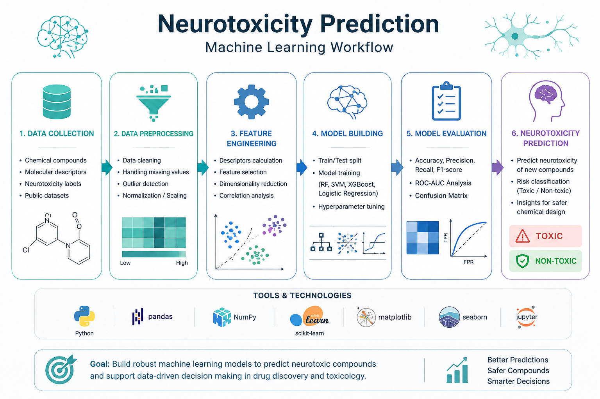

Healthcare Claims Analytics
Analyzed 15,000+ health insurance claims using R and Tableau, uncovering settlement trends, fraud risks, and provider performance.
Passionate about turning biological data into meaningful discoveries through computational methods, machine learning and data visualization.
WES Samples
Single Cells
Healthcare Claims
Districts Modelled
Hi, I'm Abhimanyu Mandal, a Computational Biologist and Bioinformatician passionate about transforming complex biological data into meaningful discoveries. My work combines genomics, transcriptomics, machine learning, and healthcare analytics to build reproducible, data-driven solutions for biomedical research.
My research interests include cancer genomics, transcriptomics, infectious disease modelling, and AI-driven healthcare. I'm particularly interested in developing scalable computational tools that bridge biological research and clinical applications.
Outside of research, I enjoy playing lawn tennis, cooking, and painting. I'm passionate about exploring emerging technologies and continuously learning across disciplines. I also love travelling and experiencing different cultures through their food, traditions, and the people I meet along the way.
Technologies and tools I use for computational biology, data science and software development.
My journey in computational biology, genomics and healthcare analytics.
Research and analytics projects.

Analyzed 15,000+ health insurance claims using R and Tableau, uncovering settlement trends, fraud risks, and provider performance.

Designed a reproducible bioinformatics pipeline to analyze Whole Exome Sequencing data and identify germline variants associated with oral cancer in Indian patients.

Developed a Bayesian spatial epidemiology workflow for tuberculosis surveillance, identifying high-risk regions through geospatial analysis.

Built an end-to-end cheminformatics pipeline that predicts drug-induced neurotoxicity from molecular structures using RDKit descriptors and machine learning, achieving 84.06% accuracy and 0.91 ROC-AUC.
Academic background and research specialization.
Pharmaceutical Engineering & Technology
CGPA: 8.74 / 10
Master's Thesis: Germline Variant Analysis in Indian OSCC-GB patients using Whole Exome Sequencing.
Peer-reviewed research and manuscripts.
Manuscript under review
Diseases (2022)
3 Biotech (2022)
IIT Bombay
Western University, Canada
Elucidata Corporation
I'm open to research collaborations, bioinformatics roles, computational biology projects and data analytics opportunities.
Bengaluru, India